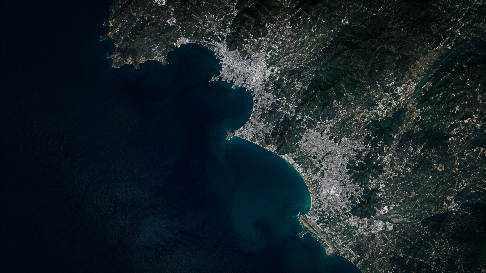
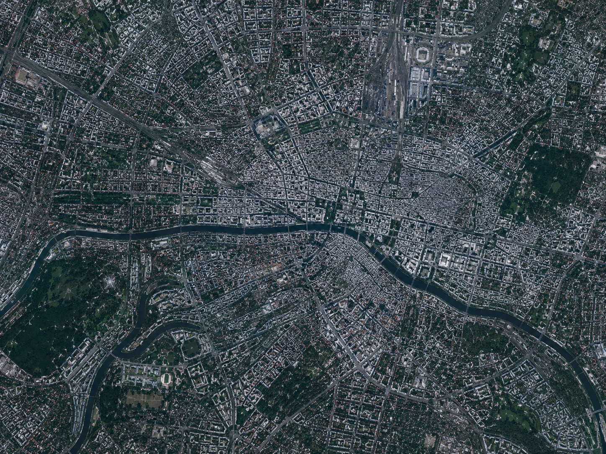

About this satellite
The OrbitRent Dove-PSB, operated by Planet Labs under the SuperDove technology line, provides an "always on" optical scanning constellation. This satellite captures continuous, high-resolution imagery without the need for manual tasking. It delivers unmatched coverage for rapid global change detection.
Equipped with 8 spectral bands (including Coastal Blue, Red Edge, and NIR), it is highly optimized for agricultural monitoring, coastal studies, and especially tracking illegal deforestation. With daily global revisit capabilities, this dataset ensures you never miss a critical terrestrial event.
The data is processed to Surface Reflectance and delivered via our fast REST API or Webhook directly to your cloud infrastructure, natively in GeoTIFF format for immediate GIS integration.
Technical Specifications
| Type | Optical Scanning Constellation |
|---|---|
| Resolution | 3.0m resampled (3.7m nadir) |
| Revisit Time | Daily (Global) |
| Spectral Bands | 8 Bands: Coastal Blue, Blue, Green I, Green, Yellow, Red, Red Edge, NIR |
| Delivery Format | GeoTIFF - Surface Reflectance |
| Primary Use Case | Deforestation monitoring |
| Access | REST API / Webhook |
Data Preview
{
"id": "planetscope-superdove",
"nome": "OrbitRent Dove-PSB",
"provedorReal": "Planet Labs (Tecnologia SuperDove)",
"categoria": "Imagens",
"tipo": "Constelação Óptica de Varredura Contínua",
"resolucao": "3.0m resampled (3.7m nadir)",
"revisita": "Diária (Global)",
"bandas": [
"Coastal Blue (431-452 nm)",
"Blue (465-515 nm)",
"Green I (513-549 nm)",
"Green (547-583 nm)",
"Yellow (600-620 nm)",
"Red (650-680 nm)",
"Red Edge (697-713 nm)",
"NIR (845-885 nm)"
],
"formatoEntrega": "GeoTIFF - Surface Reflectance",
"preco": 15.00,
"unidade": "km²"
}
Ratings & Reviews
Based on 127 reviews
John Doe
AgriTech Solutions
Excellent spatial resolution. The infrared bands were exactly what we needed to monitor crop health over the midwest. The data delivery was almost instant after checkout.
Alice Smith
Urban Planning Dept
Very reliable data source. Sometimes the cloud cover estimates are slightly off, but the 0.5m resolution makes up for it when you get a clear shot. Will definitely use again for our city expansion analysis.
OrbitRent Dove-PSB
Operated by Planet Labs
Resolution
3.0m resampled
Revisit Time
Daily (Global)
Altitude
~475–505 km LEO
Format
GeoTIFF